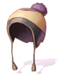

File list
This special page shows all uploaded files.
{kind=link}
{kind=link}
| Date | Name | Thumbnail | Size | User | Description | Versions |
|---|---|---|---|---|---|---|
| 04:27, 14 April 2016 | 18934 fox ear ribbons.png (file) | 8 KB | Renata | 1 | ||
| 09:35, 3 July 2016 | 18886.png (file) | 9 KB | Lunch | 1 | ||
| 19:49, 14 April 2016 | 18874.png (file) |  |
298 bytes | Mayo | 1 | |
| 09:16, 15 July 2018 | 18856.png (file) |  |
482 bytes | Colours | 1 | |
| 19:59, 14 April 2016 | 18849.png (file) |  |
490 bytes | Mayo | 1 | |
| 19:59, 14 April 2016 | 18848.png (file) | 385 bytes | Mayo | 1 | ||
| 09:34, 3 July 2016 | 18842.png (file) | 9 KB | Lunch | 1 | ||
| 00:08, 10 November 2017 | 18815.png (file) | 7 KB | Tokeiburu | 1 | ||
| 00:08, 10 November 2017 | 18814.png (file) |  |
7 KB | Tokeiburu | 1 | |
| 19:50, 14 April 2016 | 18794.png (file) |  |
475 bytes | Mayo | 1 | |
| 00:42, 17 March 2016 | 18782 butterfly wing ear.png (file) | 7 KB | Renata | 1 | ||
| 00:46, 17 March 2016 | 18746 chilly breath.png (file) | 3 KB | Renata | 1 | ||
| 00:46, 17 March 2016 | 18712 fan in mouth.png (file) | 9 KB | Renata | 1 | ||
| 09:34, 3 July 2016 | 18710.png (file) | 7 KB | Lunch | 1 | ||
| 06:52, 2 July 2016 | 18709.png (file) |  | 9 KB | Mayo | 1 | |
| 00:45, 17 March 2016 | 18702 shaving cream.png (file) | 8 KB | Renata | 1 | ||
| 00:44, 17 March 2016 | 18678 leek in mouth.png (file) | 4 KB | Renata | 1 | ||
| 00:41, 17 March 2016 | 18676 hexagon spectacles.png (file) | 6 KB | Renata | 1 | ||
| 19:32, 11 October 2016 | 18652 .png (file) | 9 KB | Tokeiburu | 1 | ||
| 19:29, 11 October 2016 | 18652.png (file) |  |
4 KB | Tokeiburu | 1 | |
| 15:56, 8 March 2019 | 1865.gif (file) | 28 KB | Alice | 1 | ||
| 00:36, 17 March 2016 | 18647 stunning star eyepatch.png (file) | 4 KB | Renata | 1 | ||
| 09:34, 3 July 2016 | 18640.png (file) | 7 KB | Lunch | 1 | ||
| 15:56, 8 March 2019 | 1864.gif (file) |  |
66 KB | Alice | 1 | |
| 00:35, 17 March 2016 | 18626 chewy gelato.png (file) | 8 KB | Renata | 1 | ||
| 19:49, 14 April 2016 | 18611.png (file) |  |
224 bytes | Mayo | 1 | |
| 00:44, 17 March 2016 | 18602 watermelon slice.png (file) | 7 KB | Renata | 1 | ||
| 05:38, 27 March 2016 | 18588 silvah bunny band.png (file) |  |
415 bytes | Renata | 1 | |
| 02:28, 28 March 2016 | 18587 blue bunny band.png (file) |  |
412 bytes | Renata | 1 | |
| 06:05, 27 March 2016 | 18586 violet bunny band.png (file) |  |
410 bytes | Renata | 1 | |
| 07:13, 27 March 2016 | 18585 orange bunny band.png (file) |  |
414 bytes | Renata | 1 | |
| 13:14, 28 April 2017 | 18581.png (file) |  |
9 KB | Renata | 1 | |
| 19:47, 11 January 2016 | 18570.png (file) | 383 bytes | Tokeiburu | 1 | ||
| 19:48, 14 April 2016 | 18539.png (file) |  |
480 bytes | Mayo | 1 | |
| 00:09, 10 November 2017 | 18530.png (file) | 9 KB | Tokeiburu | 1 | ||
| 13:14, 28 April 2017 | 18524.png (file) | 9 KB | Renata | 1 | ||
| 08:18, 18 October 2016 | 1839.png (file) |  |
11 KB | Halves | 1 | |
| 08:17, 18 October 2016 | 18130.png (file) |  |
6 KB | Halves | 1 | |
| 07:08, 27 January 2017 | 18128 infinity bow.png (file) | 10 KB | Renata | 1 | ||
| 00:54, 12 April 2016 | 18120 ES Piercer Bow HQ.png (file) | 5 KB | Renata | 1 | ||
| 00:32, 12 April 2016 | 18120 ES Piercer Bow.png (file) |  |
5 KB | Renata | Reverted to version as of 00:29, 12 April 2016 | 4 |
| 23:34, 4 January 2021 | 17 2 map.png (file) |  |
2.67 MB | I Know To Write | adjusted the position of red pepper since it was a bit too much to the right | 2 |
| 20:01, 12 September 2016 | 17RAC.png (file) |  |
329 KB | Halves | 1 | |
| 20:01, 12 September 2016 | 17PRO.png (file) |  |
325 KB | Halves | 1 | |
| 20:01, 12 September 2016 | 17PAY.png (file) | 207 KB | Halves | 1 | ||
| 20:11, 12 September 2016 | 17NPC.PNG (file) |  |
74 KB | Halves | 1 | |
| 20:01, 12 September 2016 | 17MOR.png (file) | 167 KB | Halves | 1 | ||
| 20:00, 12 September 2016 | 17LIG.png (file) | 301 KB | Halves | 1 | ||
| 20:00, 12 September 2016 | 17GEF.png (file) | 238 KB | Halves | 1 | ||
| 20:00, 12 September 2016 | 17ALB.png (file) | 228 KB | Halves | 1 |
{kind=link}
{kind=link}
{kind=link}
{kind=link}
{kind=link}
{kind=link}
{kind=link}
{kind=link}
{kind=link}
{kind=link}
{kind=link}
{kind=link}
{kind=link}
{kind=link}
{kind=link}
{kind=link}
{kind=link}
{kind=link}
{kind=link}
{kind=link}
{kind=link}
{kind=link}
{kind=link}
{kind=link}
{kind=link}
{kind=link}